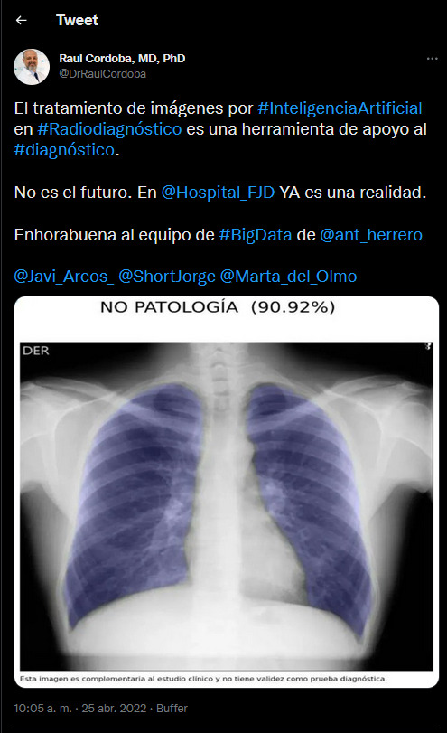

TWEET INTERESANTE
El tratamiento de imágenes por #InteligenciaArtificial en #Radiodiagnóstico es una herramienta de apoyo al #diagnóstico.
— Raul Cordoba, MD, PhD (@DrRaulCordoba) 25 de abril de 2022
No es el futuro. En @Hospital_FJD YA es una realidad.
Enhorabuena al equipo de #BigData de @ant_herrero @Javi_Arcos_ @ShortJorge @Marta_del_Olmo pic.twitter.com/WT6sGtb1Lj
CAPTURA DEL TWEET
Foto captura de seguridad del tweet en caso de que éste se haya eliminado o ya no esté disponible por otros motivos.
COMENTARIO DEL GRUPO
Elegimos éste tema no solo por nuestro interés en la evolución de la inteligencia artifcial para mejorar la calidad de los diagnósticos médicos, sino tambien porque en cierto modo esta nocticia se conecta con nuestro tema elegido para el contenido de otros de los puntos de nuestro trabajo, mas precisemente relacionado al tema del upscaling.